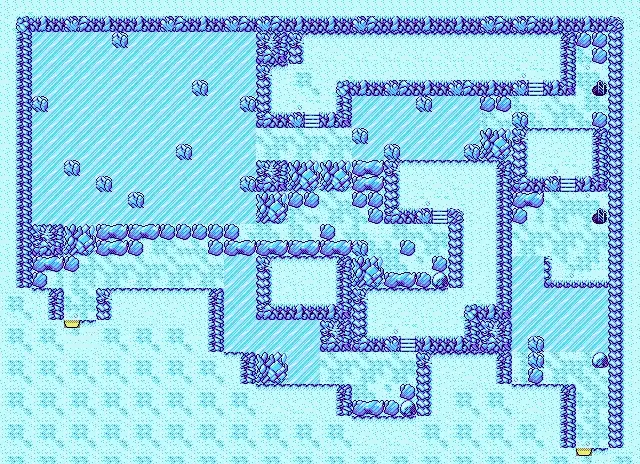
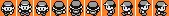
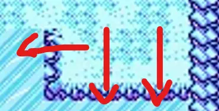
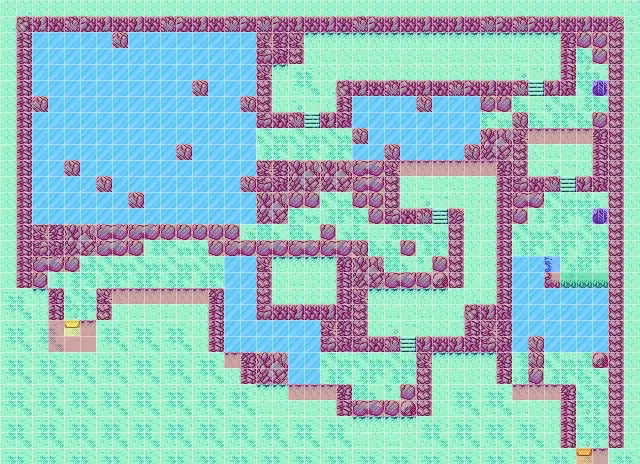

A Pokémon Maze
A (BFS) maze puzzle game solver (and little bit more) inspired by Pokémon
After my journey into ML I needed some decompression time to set up my next AI project, so I checked my TODO cauldron for inspiration and looked for deterministic projects in the queue. After a while I landed on an idea that had been waiting to be finished for quite a while.
BFS, baby!
The idea
Inspired by notorious competitive-programming problems, I had always wanted to create my own maze puzzle. I started working on it, and very soon I faced the uncomfortable truth that I am not that creative. My lazy side saved me again (😂): I remembered that when I was young I used to solve labyrinth-style problems in the Pokémon games on my Game Boy Color.
That nostalgia-driven idea hyped me up, so I started looking for resources. In short, I found a reasonably large maze with some fun interactions:

…and a usable sprite for the pawn:

Studying the maze
I studied the maze image and reverse-engineered it. The most obvious interactions that came to mind were:
- Empty space lets you walk.
- Rocks block you like walls.
Immediately, the defining feature of this maze stood out: the icy blocks. I remembered their behaviour perfectly from when I was younger: they are slippery. Once you step onto a frozen tile from a direction, you slide in that direction until you hit an obstacle.
A slightly more complex rule applies to the one-way jumpable blocks (the ledges): you can pass through them in only one *verse*, and the pawn lands on the adjacent tile in that direction.

Finally, I modelled ladders as teleports: entering a ladder moves the pawn to the other end (the paired ladder).
Once those special moves were clear, I captured them in an enum:
public enum ObjectEnum : ushort
{
Empty,
Wall,
Entrance,
Exit,
Ladder,
Ice,
JumpDown,
JumpLeft
}BFS - Breadth First Search (Pokémon.Maze.Core)
Guided by TDD, I modelled edge cases for the maze:
- paths that end with icy tails only
- longer paths with icy tails than "plain" paths
- ledges passable from one side only
- ladder teleportation
- and so on…
Then I implemented BFS to search for the exit. As an Advent of Code veteran by now, I did not hit any major roadblocks. The approach is the classic one:
- a queue holds the exploration frontier by level
- the main logic decides whether a neighbour of the current node is worth exploring (or applies special actions such as teleportation or sliding)
- already visited cells are skipped
- the loop stops when the exit is found, or when every reachable cell has been visited, in which case I treat the maze as unsolvable and throw an exception
An honorable mention goes to the iceSlipsAlreadySeen cache: a Dictionary that avoids redoing the same ice slide from the same direction.
I kept refining the algorithm until it passed all the tests I had written.
From image to matrix
At that point I was ready to run my Core logic on the real maze, but the image is not a matrix my algorithm can traverse. I needed to encode it into a grid the code could explore.
Thanks to this article, I learned that a tile is 16x16 pixels by convention, and the image size is a multiple of that: 640x464 px maps to a 40x29 matrix of my enum values.
I could have filled that matrix by hand, tile by tile…
Not in a million years!
So I wrote an automatic encoder instead.
The matrix-from-image generator (Pokémon.Maze.Matrix.Generator)
With the SixLabors library it was straightforward (no sponsorship, just a good fit 😋) to detect walls, ice, and empty tiles in the source image.
I split the bitmap into a grid of 16x16 cells. For each cell, I sample the central pixel (later upgraded to average RGB over the whole tile). If the mean brightness (R+G+B)/3 is below a threshold, the cell is a wall; otherwise I compare its colour to a reference ice colour from a known tile (the first ice block from the top-left, which I point the algorithm at). If the Euclidean distance in RGB is within the threshold, it is ice; otherwise it is walkable empty space.
The matrix is written to a .data file, and I render an overlay on top of the original image so I can visually verify how pixels were classified.
After tuning, using COLOR_THRESHOLD=167f and switching to average RGB over the whole tile, I got a usable first pass:
The overlay generator (Pokémon.Maze.Overlay.Generator)
I fixed the .data file by hand. Rather than eyeballing every change, I refactored the code from the matrix generator section into a dedicated tool that paints the matrix back onto the image.
This is the result after manual corrections (here the matrix file), produced with Pokémon.Maze.Overlay.Generator:

■Walkable blocks■Walls / rocks■Ice■Entrance / exit■Ladder■Ledge down■Ledge left
The CLI (Pokémon.Maze.CLI)
Happy with the matrix, I wired it into the solver. I reused an old competitive-programming-style harness, adjusted it, and finally saw the algorithm print a real trace:
Step 48 / 169 (12, 27) direction <
########################################
########################################
##/////#////////### #####
##//////////////### # ###
##//////////////# # ##
##//////////#///# ############ ## O##
###////////////## #////#///## ##
##//////////////### ##//////// # ###
##////////////// #///////##########
##/////////#//// //#////#### ###
##//#///////////################# ###
##////#////////########## #### ####
##//////#///////#### ### < ### ##
##//////////////## #### # ## O##
############### # # # ##
######### ########## # # # ##
##### //# ### ## #//| ##
### //# ######## #//#___##
# # ########//# ## #//////##
# # # #//####### ###//////##
# #S# #//////### ###//////##
# ### #//////##### ######/#////##
# ####// # # # ###
# ###// # # # ##
# #### ## #### ##
# ###### # ##
# # ##
# # ##
####################################E###The UI (Pokémon.Maze.UI)
The CLI output was fine for debugging, but I wanted that childish "playing on a Game Boy" feeling again.
I spun up a WPF project. The main window stacks layers in order:
- the maze bitmap as a static background
- a transparent grid aligned to 16x16 cells
- a canvas for styling visited vs frontier cells
- the sprite on top
I extended Core to publish Snapshot objects into a Channel; the UI subscribes, and a DispatcherTimer steps through them and refreshes the grid.
Seacond honorable mention: a trick I kept from high school; instead of loading separate images per facing, I load one chroma-keyed sprite sheet and pick the frame inside each Snapshot.
I am proud of how it turned out, here is the result:
Some considerations
My main takeaway is how pleasant Channel is for this kind of producer/consumer UI. I want to explore it more and stress-test it properly.
The project was a fun break, and it already suggests a few improvements and spin-offs...
Stay tuned!
See you soon.
Full code: here.